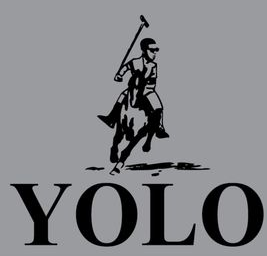

YOLO
团队介绍：
YOLO，美语新词，是You Only Live Once的首字母缩略词，意为你只能活一次，是坏孩子做坏事前的宣言。
和拉丁语的“及时行乐”或“死亡警告”相类似，YOLO的寓意是人应该享受人生，即使需要承担风险。就是鼓励人们不怕冒险，想做什么就做什么，享受人生，因为只会活一次。
现在这一句话常常用在青少年的对话和音乐当中。加拿大饶舌歌手德雷克的《The Motto》使此句普及于网络中。

团队介绍：
YOLO，美语新词，是You Only Live Once的首字母缩略词，意为你只能活一次，是坏孩子做坏事前的宣言。
和拉丁语的“及时行乐”或“死亡警告”相类似，YOLO的寓意是人应该享受人生，即使需要承担风险。就是鼓励人们不怕冒险，想做什么就做什么，享受人生，因为只会活一次。
现在这一句话常常用在青少年的对话和音乐当中。加拿大饶舌歌手德雷克的《The Motto》使此句普及于网络中。